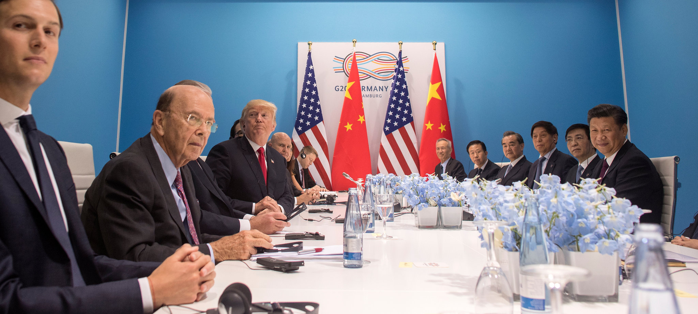

Global Leaders Meet to Discuss Climate Change
Global leaders from various countries have gathered to discuss the pressing issue of climate change. The summit aims to create a unified strategy to combat the adverse effects of climate change and promote sustainable practices worldwide. Topics discussed include renewable energy, carbon emissions, and international policies to protect the environment.
During the summit, several prominent figures took to the stage to emphasize the importance of immediate action. "We are at a critical juncture," said the United Nations Secretary-General. "The choices we make today will determine the fate of our planet for generations to come."
The summit also featured a series of workshops and panel discussions focusing on innovative solutions. Experts in renewable energy presented breakthroughs in solar and wind technology, highlighting their potential to reduce global reliance on fossil fuels. "Renewable energy is not just a future possibility; it's a present reality," one speaker noted.
In addition to technical discussions, the summit addressed the socioeconomic impacts of climate change. Representatives from developing nations voiced concerns about the disproportionate effects on their countries, calling for increased support from wealthier nations. "Climate change is a global issue that requires global solidarity," said a delegate from an African country.
The summit concluded with a joint declaration, affirming the commitment of all participating nations to pursue aggressive climate action. The declaration outlines specific targets for reducing carbon emissions, increasing investment in renewable energy, and enhancing cooperation on environmental policy. "This is a significant step forward," said one attendee. "But the true test will be in our actions moving forward."